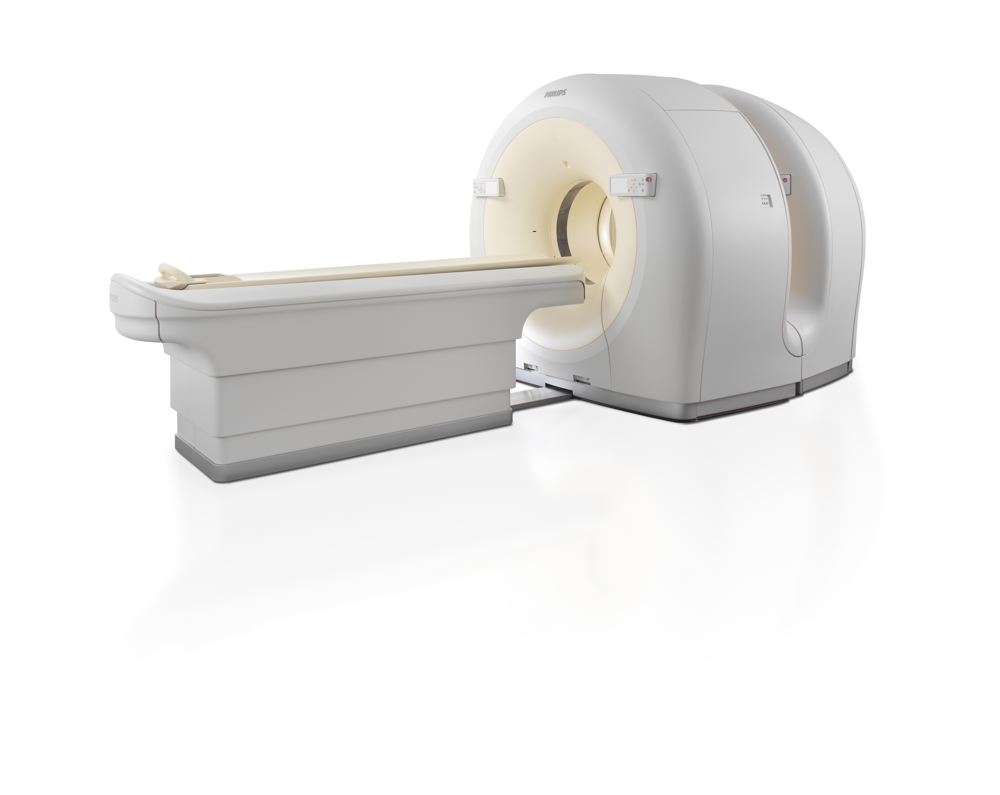
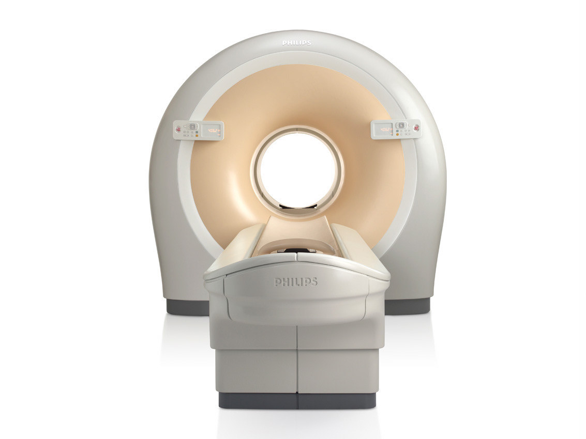
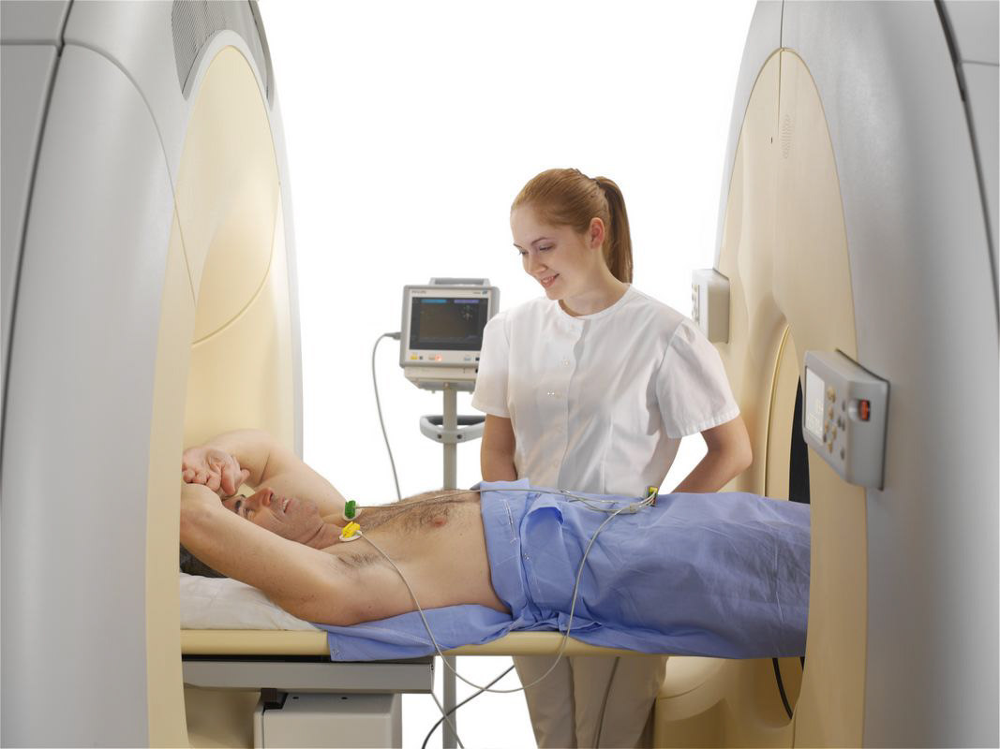
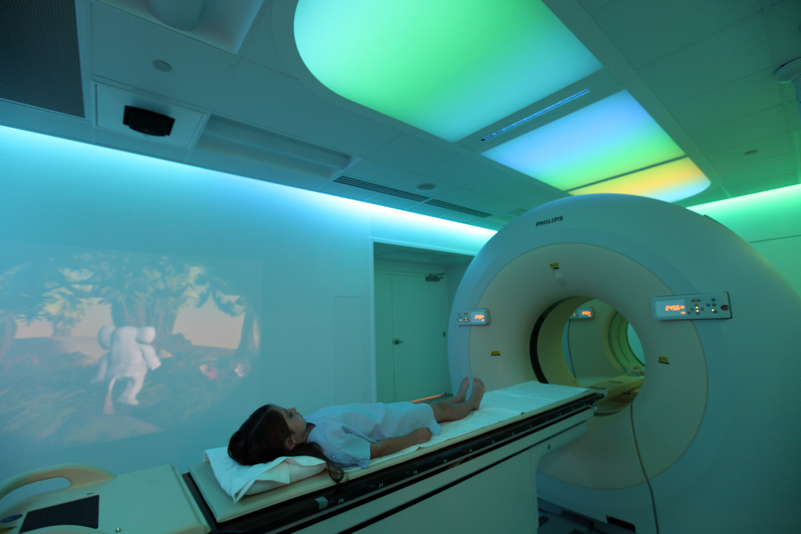
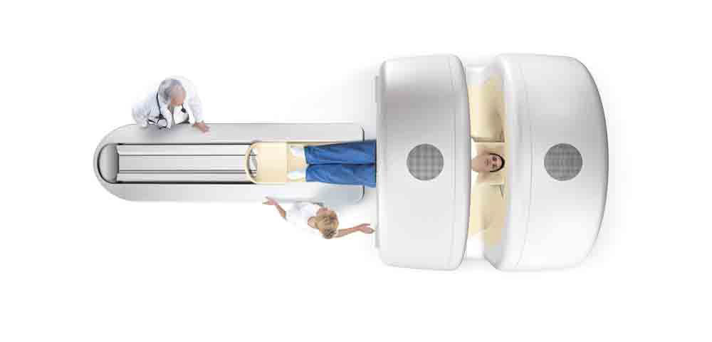
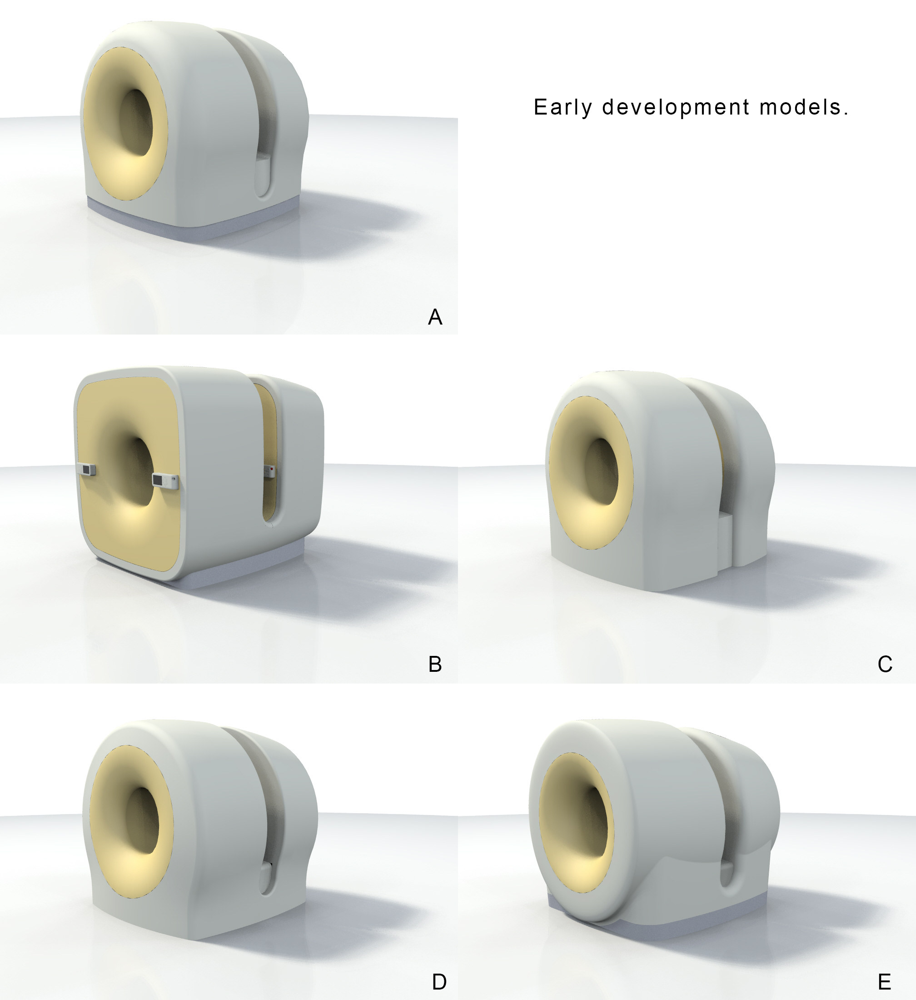
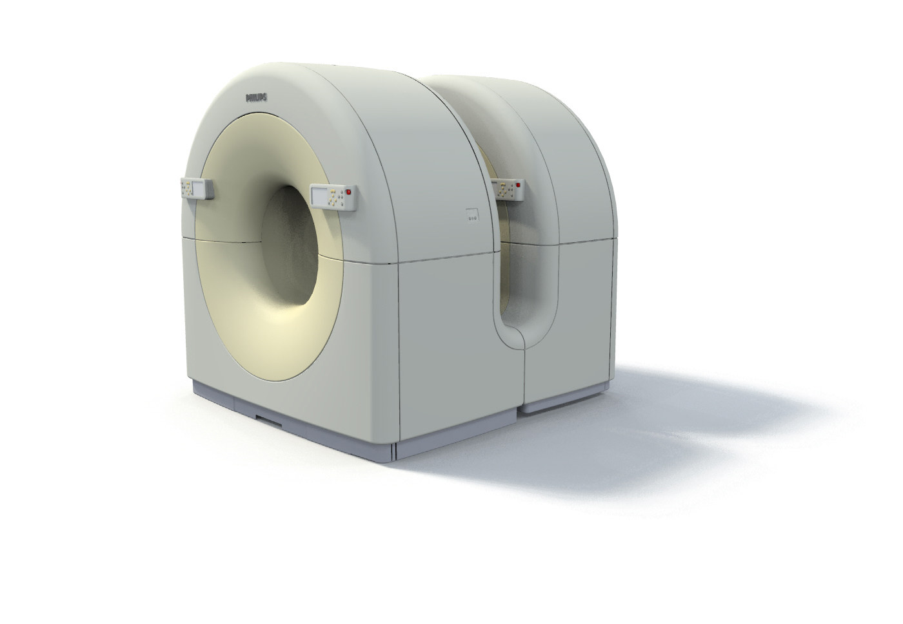
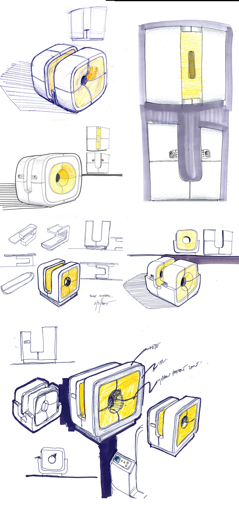

Work / Philips Nuclear Medicine 2006
Philips & IBM · 2006
Philips Nuclear Medicine 2006

Work / Philips Nuclear Medicine 2006
Philips & IBM · 2006

Philips Gemini PET/CT System
Role: Project Leader.
Working on Nuclear Medicine device that has high returns for the business on a 10 unit ~ ship per year. There are many problems that need to be solved with medical equipment. Not just a high level of Design needs to be applied but total empathy for the entire process of manufacturing to the install at the hospitals. Clinicians that do this type of work have different skills and approaches to medical care. As Designers we can meet all of these needs with the correct Design process. This was a complete redesign of this successful iconic product for Philips Medical Systems. This is the worlds only open PET/CT system in the market at that time.
The beautiful thing about the Philips Design Team is that they created entire experiences for the medical equipment to live in. This is called the Ambient Experience and it was a successful design application taking the entire patients journey through the scanning process. By doing this the clinicians were able to reduce the sedation rate of children. I was fortunate enough to work on products that were able to be included in this experience. A strong Design language makes this possible.
This was by far the largest thing I had ever Designed. This was a lot of fun going through the form development. Ultimately we went with a pure form that is reminiscent of a jet engine. The original machine was a very pure geometrical form.
Below is the image of the original machine that was redesigned.
Early sketches in the process.






